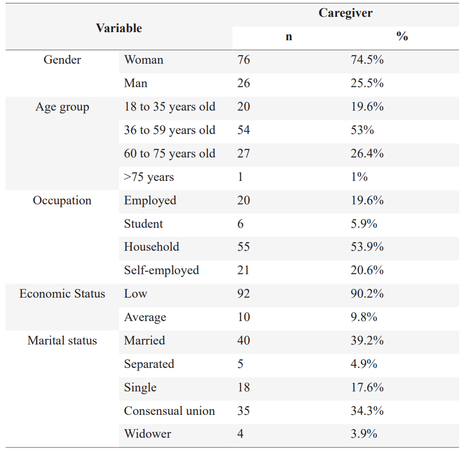
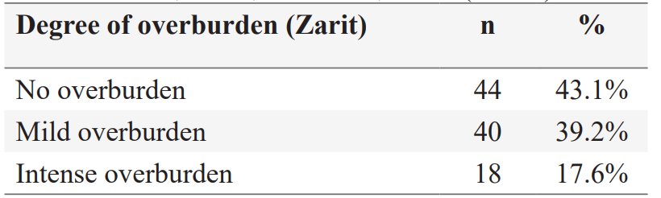
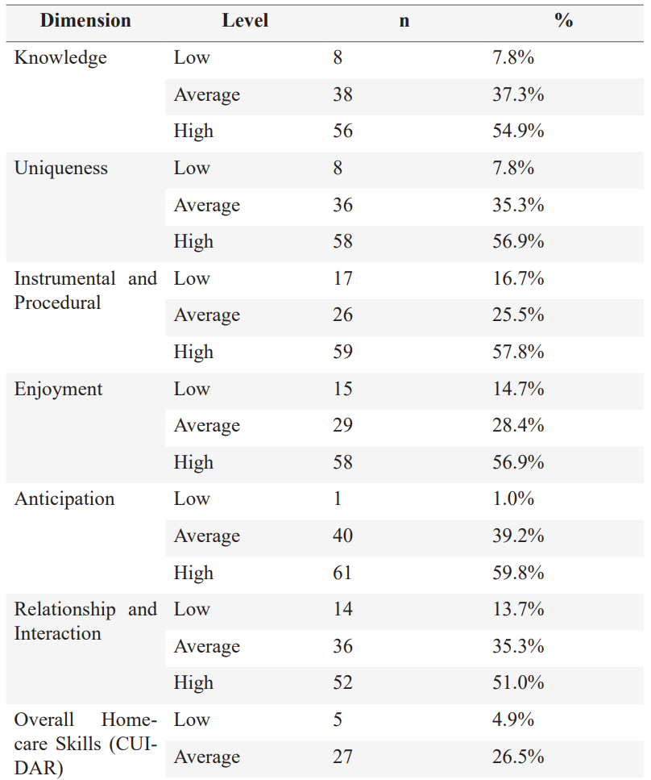
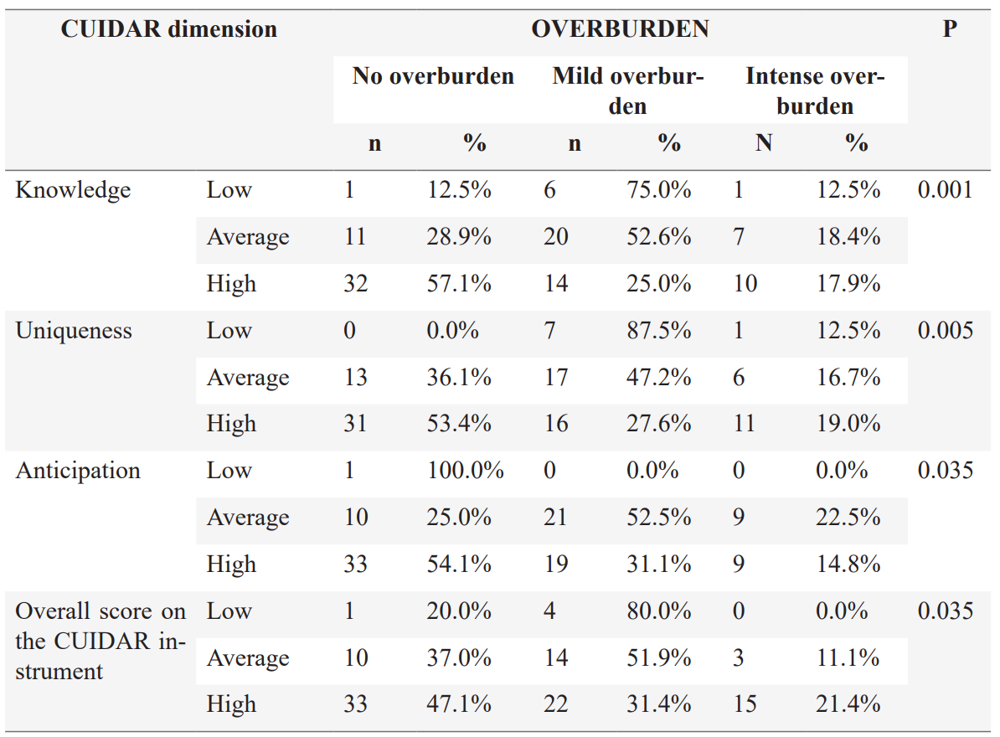

ISSN-PRINT 1794-9831 / E-ISSN 2322-7028
Vol. 19 Nº 3 / sep - dic, 2022 / Cúcuta, Colombia.
ISSN-PRINT 1794-9831 / E-ISSN 2322-7028
Vol. 19 Nº 3 / sep - dic, 2022 / Cúcuta, Colombia.
Abstract
Objective: To describe care competence and its association with overburden of caregivers of patients with chronic diseases. Method: Quantitative, descriptive, cross-sectional study, with a convenience sample. Three instruments were used for data collection: the GCPC-UN instrument for caregiver-patient characterization, the Homecare Skills Questionnaire (CUIDAR, as per its name in Spanish), and the Zarit Burden Interview. Participants in this study were 102 caregivers of people hospitalized in a health institution who met the inclusion criteria. Results: Caregivers were mainly women, had a low level of education, high burden (56.8%), and high level of care competence (68.6%). A statistically significant correlation was found between overburden and overall scores on the CUIDAR instrument, as well as with the following categories: knowledge, uniqueness and anticipation. Conclusion: Homecare competence is associated with overburden of caregivers of people with CNCDs. Therefore, nursing teams have to identify the needs of caregivers and take action so as to contribute to seamless transitions to patients’ homes.
Keywords: Chronic disease; Family caregivers; Caregiver burden; Nursing.
Resumo
Objetivo: Descrever a competência de cuidar e sua associação com a sobrecarga do cuidador familiar da pessoa com doença crônica. Método: estudo descritivo, transversal, quantitativo, amostragem por conveniência. Foi aplicada a ficha de caracterização da díade Instrumento CUIDAR e Zarit. 102 cuidadores de pessoas com doenças crônicas em áreas hospitalares, que atenderam aos critérios de inclusão. Resultados: Predominam mulheres cuidadoras, baixa escolaridade, 56,8% sobrecarga, alto nível de competência para cuidar 68,6%. Relação estatisticamente significativa com a variável sobrecarga e a qualificação global da competência CARE, bem como com suas dimensões: Conhecimento, Singularidade, Antecipação. Conclusão: A competência para cuidar está associada à sobrecarga do cuidador de pessoas com doença crônica não transmissível. Portanto, a Enfermagem tem a responsabilidade de identificar as necessidades do cuidador e intervir nelas para contribuir com a transição para o papel de cuidador no domicílio do paciente.
Palavras chave: Doença crônica; Cuidadores familiares; Sobrecarga; Enfermagem.
Resumen
Objetivo: Describir la competencia del cuidar y su asociación con la sobrecarga del cuidador familiar de la persona con enfermedad crónica. Método: Estudio cuantitativo descriptivo, transversal, muestreo por conveniencia. Se aplicó la ficha de caracterización de la díada, Instrumento CUIDAR y Zarit. 102 cuidadores de personas con enfermedades crónicas en las áreas hospitalarias, que cumplían los criterios de inclusión. Resultados: Predominan las mujeres como cuidadores, nivel de escolaridad bajo, sobrecarga en un 56,8%, alto nivel de competencia para cuidar 68,6%. Relación estadísticamente significativa con la variable sobrecarga y la calificación global de la competencia CUIDAR así como con sus dimensiones: Conocimiento, Unicidad, Anticipación. Conclusión: La competencia de cuidar se asocia con la sobrecarga del cuidador de personas con enfermedad crónica no transmisible. Por lo tanto, Enfermería tiene la responsabilidad de identificar las necesidades del cuidador e intervenirlas para contribuir en la transición hacia el rol de cuidador en el egreso del paciente al hogar.
Palabras claves: Enfermedad crónica; Cuidadores familiares; Sobrecarga; Enfermería
Autor de correspondencia*
1* Nurse. Master
in Nursing. Master
in Education. Professor, Nursing Department. South Colombian University.
Neiva huila. Colombia.
alixyaneth.perdomo@usco.edu.co,
Nurse. Master
in Nursing. Master
in Education. Professor, Nursing Department. South Colombian University.
Neiva huila. Colombia.
alixyaneth.perdomo@usco.edu.co,  0000-0003-1390-9718
0000-0003-1390-9718
2* Nurse.
Specialist in nephrology and
urology nursing. Master in Nursing.
Professor, Nursing Department. South
Colombian University.
claudia.cantillo@usco.edu.co, 0000-0003-0173-9619
3* Nurse.
Specialist in Intensive Care.
Master in Nursing. Doctor in Nursing.
Professor, Nursing Department. South
Colombian University. Neiva-Huila.
Colombia.
graffhe@usco.edu.co, 0000-0001-9828-773X
Recibido: 5 julio 2022
Aprobado: 17 noviembre 2022
Para citar este artículo / To reference this article / Para citar este artigo: Perdomo-Romero AY, Cantillo-Medina CP, Ramírez-Perdomo CA. Homecare skills and overburden of caregivers of hospitalized chronic patients. 2023; 20(1):71-80. https://doi.org/10.22463/17949831.3336
© Universidad Francisco de Paula Santander.
Este es un artículo bajo la licencia CC-BY-NC-ND

Introduction
On a global scale, chronic non-communicable diseases (CNCDs) led to the death of 41 million people in 2016, which represents 71% of total deaths (1). CNCDs are mainly associated with risk factors such as unhealthy diets, use of alcohol and tobacco, air pollution, and sedentariness (2-3). This group of diseases includes cardiovascular diseases, cancer, diabetes, respiratory diseases, and mental diseases (3). They can lead to dependence and need for support in daily life (4), requiring the assistance of informal caregivers (5), who can be family members or friends, paid or not, who are in charge of providing support for carrying out daily tasks to people who have experienced changes in their physical and/or mental health (6).
It is acknowledged that care of people with CNCDs is taken on by caregivers and family members, and these interactions may result in stress, due to the health conditions and the behavior of the people with these diseases. This situation faced by caregivers can result in overburden and feelings of impotence due to not knowing what to do or whom to ask for help, making that taking care of a ill person becomes an exhausting labor and a depressing process (7).
The burden of uninterrupted care associates with anxiety and depression in caregivers affecting their life quality (8).
For this reason, it is important that caregivers be prepared to develop their abilities and skills, so they are able to take on homecare (9). The Homecare Competence questionnaire (CUIDAR), as for the acronym in spanish) includes the following dimensions: knowledge, related to concepts about diseases, their treatment, and daily care; uniqueness, related to personal qualities that contribute to being able to face and overcome issues and challenges; instrumental and procedural, related to the skills and abilities to carry out care tasks and meet basic needs; enjoyment, referring to the extent of well-being and personal satisfaction related to perceived quality of life; anticipation, referring to foreseeing the needs of caregivers and identifying risks; and relationships and social interaction, referring to social relationships and support networks that improve the task of providing care. Adequate levels of these factors help caregivers achieve balance in their daily lives, and helps in meeting the needs of both caregivers and the patients (10), making it easy to provide care and reducing stress, since these roles and responsibilities can result in overburden for caregivers when they do not have the needed skills and knowledge(11).
In a literature review, we found studies that address the issue of overburden of caregivers and their quality of life (12-15) but few address overburden of caregivers and homecare competence (16). Given this background, it is important to assess homecare skills before hospital discharge in order to be aware of the needs of patients with CNCDs and guide care plans and their follow-up (17), and by doing so, reduce the risk of overburden. A situation that demonstrates the gap in knowledge of the impact in competence of caring and the overburden in caregivers which is a relevant aspect to generate strategies that contributes to improving the security of the people with CNCD during hospitalization and discharge
For these reasons, the objective of this study was to describe homecare competence and overburden among caregivers of people with CNCDs that are hospitalized.
Materials and Methods
Quantitative, descriptive, correlation and cross-sectional study. A convenience sample was used. Caregivers of patients with CNCDs in hospital services were selected from the Internal Medicine department of a high-complexity public hospital. The inclusion criteria were being 18 years old or older; having been the main caregiver for more than three months; and having provided care for more than three hours a day. The sample was shaped of a hundred and two caregivers which constituted the quantity of population who were hospitalized during the time of data collection, they were informed of the objectives and procedures to be carried out, before signing free and informed consent was forms.
Data collection was carried out in the institution by the researchers and by trained research assistants, during day and night shifts, as well as on weekends. The collection process was carried out between June and September 2019, in compliance with the inclusion criteria. All caregivers who were contacted agreed to participate in the survey
The instruments used were:
The GCPC-UN caregiver-patient characterization survey (18), with 42 items that survey the pair in three categories: overall conditions and sociodemographic profile; burden and perception of support; and available means of information and communication. The instrument’s use was authorized by the research group on the care of chronic patients (GCPC) at the Nursing School of Universidad Nacional de Colombia (UN).
The homecare skills questionnaire - caregiver, short version, with 20 likert-type items, with the following response possibilities: hardly ever or never; sometimes; often; and almost always or always; with a scale from 0 to 3. Scores are defined as follows: knowledge (low 0-3, average 4-6, high 7-9), uniqueness (low 0-6, average 7-9, high 10-12), instrumental and procedural (low 0-3, average 4-6, high 7-9), enjoyment (low 0-6, average 7-9, high 10-12), anticipation (low 0-2, average 3-4, high 5-6); relationships and social interaction, (low 0-6, average 7-9, high 10-12); and the overall score (low 0-36, average 37-48, high 49-60). The instrument has a Cronbach’s alpha of 0.928 (9). The instrument was used with the authorization of the GCPC.
The Zarit burden interview (8), composed of 22 Likert-type items with five response options: 1 means never, and 5 means almost always. A score of under 46 means no overburden, from 46 to 56, mild overburden, and over 56, severe overburden. The instrument is valid and suitable for Colombia, with a Cronbach’s alpha of 0.86 (19). The instrument was used with the authorization of the provider, the Mapi Research Trust.
Data were entered on a Microsoft excel ® 2019 spreadsheet and processed in SPSS ® statistics software version 23. Univariate descriptive analysis was carried out. Qualitative variables were described using frequency tables, and quantitative variables were described by central tendency measures (mean, median), dispersion measures (standard deviation), and position measures (minimum, maximum, range). Bivariate analysis was performed using the Kruskal Wallis test, and correlation analysis with the Spearman’s method. We considered differences as statistically significant when p < 0.05.
Ethical aspects
The study was approved by the research ethics committee of Hospital Hernando Moncaleano Perdomo, minutes number 001-003 of 2019, considering the following bioethical principles: respect of human dignity, privacy, freedom of speech and feelings, confidentiality, and reciprocity.
Results
One hundred and two caregivers of CNCD patients participated in the study, of whom 74.5% were women, 66.7% were between 36 and 59 years old, with an average of 48.2 years (SD±14.9), 43.1% had completed primary school, 53.9% worked in the household, 90.2% had low economic status, and 73.5% had a spouse (Table 1).
Their relationship with the patient with CNCD was parent-child or spouse (38.2% and 37.3%, respectively). 20.5% of caregivers reported that they had a CNCD. 87% had been committed to care since diagnosis, 67.7% had been the sole caregivers for more than 37 months (49%) and more than 20 hours a day (60.8%). Patients cared for were 60 years old or older (72.5%), with high levels of dependence (52.9%) and no intellectual alterations (61.8%), and they saw themselves as a light or moderate burden (43.13% and 36.3% respectively).
Table 1. Sociodemographic profile of caregivers of patients with CNCDs. Neiva, Huila, Colombia, 2019. (n=102)
Source: study data
A high percentage of caregivers of patients with CNCDs perceive mild or intense overburden when they took on their roles (Table 2).
Table 2. Overburden of caregivers of patients with CNCDs. Neiva, Huila, Colombia, 2019. (n=102)
Source: study data
With regard to homecare skills (CUIDAR instrument), the six dimensions showed high scores: knowledge, 54.9%; uniqueness, 56.9%; instrumental and procedural, 57.8%; enjoyment, 56.9%; anticipation, 59.8%; and relationships and social interaction, 51%. Likewise, the overall score for skills was high, at 68%; however, average levels above 25% were found for all dimensions, including overall skills (Table 3).
Table 3. Homecare skills of caregivers of patients with CNCDs. Neiva, Huila, Colombia, 2019. (n=102)
Source: study data
Statistically significant correlations were found between overburden and the following dimensions: knowledge (p=0.001 < 0.05); uniqueness (p=0.005 < 0.05); anticipation (p=0.035 < 0.05); and the overall score on the CUIDAR instrument (p=0.035 < 0.05); no correlations were found with the other three dimensions (Table 4).
Table 4. Association between homecare skills and overburden of caregivers of patients with CNCDs. Neiva, Huila, Colombia, 2019. (n=102)
Source: study data
Caregivers who did not experience overburden had a high level of knowledge, as opposed to caregivers who experienced low and average levels of overburden.
Caregivers who did not experience overburden had a high level of knowledge, as opposed to caregivers who experienced low and average levels of overburden.
For the anticipation dimension, caregivers who did not experience overburden had high scores, and caregivers with mild or intense overburden had low or average scores.
Regarding the overall scores on the CUIDAR instrument, caregivers who did not experience overburden had high scores, as opposed to caregivers who experienced mild overburden and had low or average scores.
Discussion
Care is directly associated with the family environment, where caregivers are usually spouses or children, and are mostly women, women are assigned care tasks, and make up an unpaid workforce, as shown in the literature (10,14,20-26). Women are asigned to care labors, to being in an informal laboral which is not remunerated based on cultural and social representations (27). This is a key factor for understanding current gender inequalities associated with care of adult individuals with CNCDs (28), for which it is necessary to implement measures to increase equality in the care of people with chronic conditions. The majority of the surveyed caregivers had spouses, worked in the household, had been committed to care since diagnosis as sole caregivers, had low economic status, and had completed primary school. These findings are in line with those of previous studies (21,23,29).
This study found that six out of ten caregivers experienced overburden, while other studies have reported overburden in four out of ten (21), or one-third with intense overburden (22). Overburden can be associated with taking on responsibility for treatment, as well as emotional and practical support tasks, decision-making, and health services paperwork (30), all of which are situations that lead to stress, are described as a burden, and affect the quality of life of caregivers in its social, personal and economic aspects (31).
The findings of this study allow us to conclude that there is a correlation between homecare skills and overburden. Likewise, they describe a correlation between the knowledge dimension and overburden. It is important to recognize that the caregiver does his own functions in solitude with low knowledge of them and without a familiar or healthcare system support leading to a physical tension and a great emotional burden, putting them at risk of becoming sick (32-34). During this process caregivers go through three stages: the first is intense, when they prepare to become a caregiver; in the second, they learn the routine and adapt to changes; and in the third, they feel they are competent to perform their duties, finding a purpose for their work and self-care (28). and improving their skills over time (11). Lack of appropriate communication about how to deal with these diseases results in lack of preparation to take on care, which leads to stress and overburden (35-36).
Moreover, a correlation was found between the uniqueness dimension and overburden. The acceptance and organization of the role of caregiver creates interdependence in the pair. Caregivers are aware that they live to take care of patients, who are now part of their lives, and they complement each other. This strong bond between caregivers and patients with CNCDs is “special,” and when the care process takes place, leads to new roles and improved provision of care, as well as personal growth for the pair (37). Uniqueness can be a protective factor that allows them to overcome their problems as caregivers, resulting in reduced risk of overburden.
The results also show a correlation between the anticipation dimension and overburden, in which higher scores mean lower risk of experiencing overburden. Not being able to anticipate unexpected events results in a high percentage of caregivers who experience mild or intense levels of overburden.
Being supported by healthcare staff helps them define priorities, solve problems, and make decisions. Being informed increases confidence, even though the provision of care is complex due to the number of daily tasks to be performed, many of which cannot be anticipated (11). When caregivers are aware, they can anticipate care demands and prevent overburden.
Therefore, when nursing teams assesses homecare skills by means of the CUIDAR instrument before hospital discharge, they can anticipate needs, and together with caregivers, they can plan and define care strategies that strengthen the caregivers’ role, with the aim of providing continuity of safe and high-quality care, with fewer readmissions and better outcomes.
Conclusion
Conflicts of interest
The authors have no conflicts of interest.
Acknowledgements
We would like to thank the caregivers who agreed to participate in the study, and the Hospital Universitario Hernando Moncaleano Perdomo-Neiva-Huila-Colombia, which approved the study and granted access to their facilities for data collection.
References